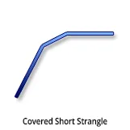
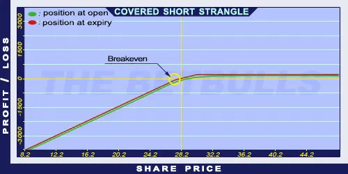

Description and use

A Covered Short Strangle is a risky strategy and it is a version of the Covered Short Straddle. The main idea is to sell a lower strike OTM Put option to increase the return of a Covered Call. When the share price is below the Short Put’s strike price, the risk increases. The Short Put option increases the risk of the overall strategy. The extra risk equals the difference of the Short Put’s strike price and its premium. When the share price is below the Short Put’s strike price, the Short Put will be exercised and the Short Call will expire worthless. Consequently, further shares must be purchased at the Short Put’s strike price. This situation is expensive when the share prices fall. When the share prices are below the Short Call’s strike price, the Short Put will expire worthless, the Short Call will be exercised, and the shares are going to be delivered. The direction of the market is increasing. The goal of the strategy is to increase monthly revenues. Usually the trading takes place on a monthly basis.
- Type: Bullish
- Transaction type: Debit
- Maximum profit: Limited
- Maximum loss: Limited
- Strategy: Income strategy
Opening the Position
Covered Short Strangle Option Positions
- Buy shares.
- Sell lower strike (OTM) Put options (strike price < estimated price at expiration).
- Sell higher strike (OTM) Call options (same expiration and strike price as the Put option’s).
Steps
Entry:
- Make sure the trend is ascending or stagnating at a certain level.
Exit:
- When the share price is above the strike price, the Short Call will be exercised automatically and the investor will deliver the shares. The income equals to the received premiums.
- When the share price is at or below the strike price, the Short Put will be exercised. Then further shares must be purchased. The investor must pay the strike price for the shares. Therefore, it is an expensive transaction.
- When the share price is between the two strikes, the investor can keep the premiums. Covered Short Strangle is a risky strategy and not recommended for beginners.
Basic Characteristics
- Maximum loss: Share price + Strike price (Put) - Premium (Put) - Premium (Call).
- Maximum profit: Limited. Premiums (Put and Call) + Strike price (Call) - share price.
- Time decay: Time decay has a positive effect on the value.
- Breakeven point: Mixed. It is the function of the share price, the premiums, and the strike prices.
Advantages and Disadvantages
Advantages:
- Income on a monthly basis.
- The potential income is higher than for the Covered Call strategy.
- It is less risky than the Covered Short Straddle strategy.
Disadvantages:
- It is highly risky when share prices fall.
- Expensive.
- In case of increasing share prices, it has an upper limit.
- It has no limits for losses. Not a recommended strategy for beginners.
Closing the Position
Details on how to close the position based on the share price relative to the strike price, and strategies for mitigating losses.
Example

Covered Short Strangle strategy example
- ABCD is traded for $28.20 on 25.02.2017. Buy a share for $28.20. Then the investor sells a Short Put option which has a strike price of $27.50, expires in March 2017. and costs $1.20 (premium). Then he sells a Short Call option which has a strike price of $30, expires in March 2017. and costs $0.90.
- Net debit: ND = $26.10
- Maximum loss (risk): R = $53.60
- Maximum profit: Pr = $3.90
- Breakeven point: BEP = $26.80